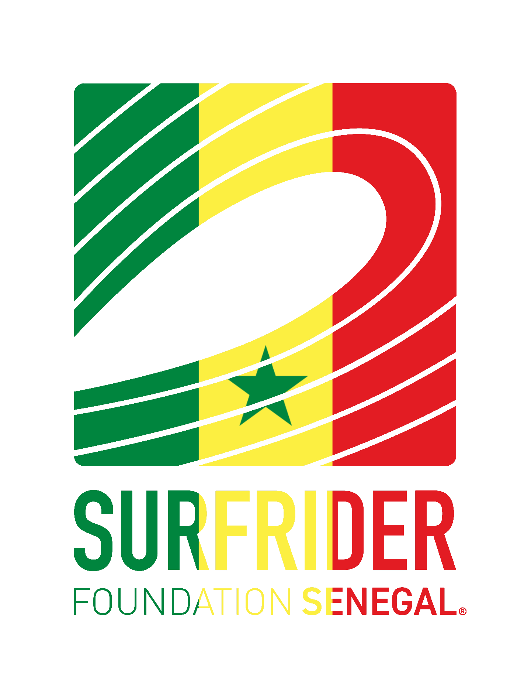

1. Monitorer
Faire le suivi de la qualité de l'eau et des déchets du littoral sénégalais, avec notre réseau citoyen des Saytoukat Géej.
Surfrider Foundation Sénégal agit au quotidien contre la pollution du littoral : suivi de la qualité de l'eau, lutte contre les déchets, sensibilisation et mobilisation des citoyen·ne·s.

Depuis plus de 25 ans, Surfrider Foundation protège, sauvegarde et met en valeur les océans et toute la population qui en jouit. Elle agit au quotidien pour lutter contre les atteintes à l'environnement littoral et à ses usagers.
Le chapter au Sénégal, premier en Afrique subsaharienne, a été créé en novembre 2020. Acteur majeur du suivi de la pollution du littoral, la Surfrider Sénégal fédère, accompagne et renforce les acteur·rice·s du territoire (institutions, société civile, ONG…) autour d'une mission commune : préserver l'océan et identifier ensemble des solutions durables et à fort impact.
Rencontrer l'équipeco-fondateur·rice·s et une équipe exécutive engagée
membres dans notre communauté
sites de baignade suivis à Dakar
campagnes de prélèvements depuis 2023
Faire le suivi de la qualité de l'eau et des déchets du littoral sénégalais, avec notre réseau citoyen des Saytoukat Géej.
Alerter les usagers de la mer, les autorités et la population sénégalaise sur les causes et les conséquences de la pollution marine.
Mobiliser les acteur·rice·s locaux, publics et privés pour mettre en œuvre des solutions concrètes, et sensibiliser les citoyen·ne·s à la protection de l'océan.
Depuis 2023, la Surfrider Sénégal suit la qualité des eaux de baignade sur six sites emblématiques de la presqu'île de Dakar : Virage, Baie des Carpes, Ngor, Secret, Ouakam et Yoff. Les résultats ont été rendus publics le 23 avril 2026 lors d'une Rencontre nationale, avec le lancement d'un plaidoyer national.
Bénévole, Saytoukat Géej, partenaire ou simple ocean lover : il y a une place pour toi.